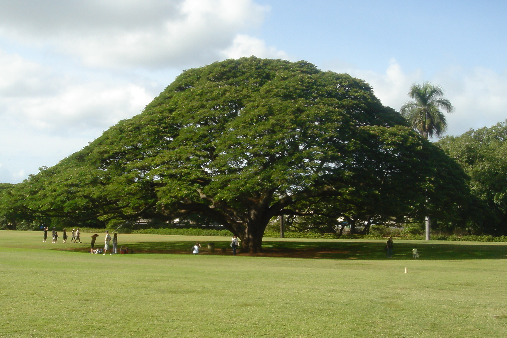
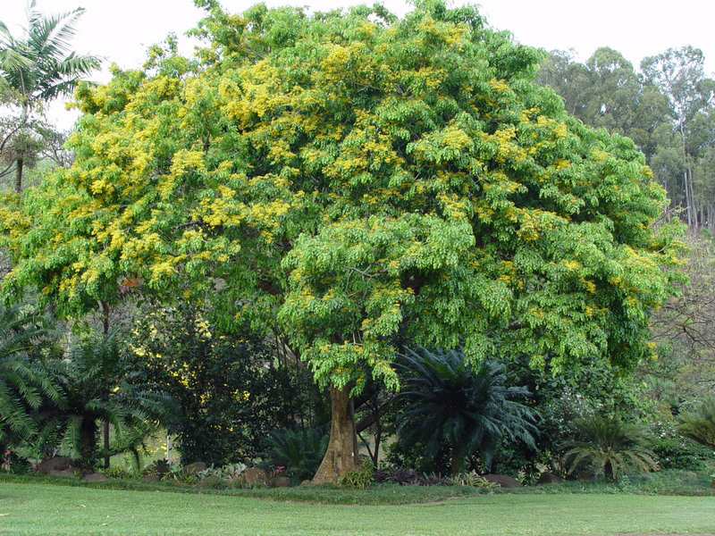
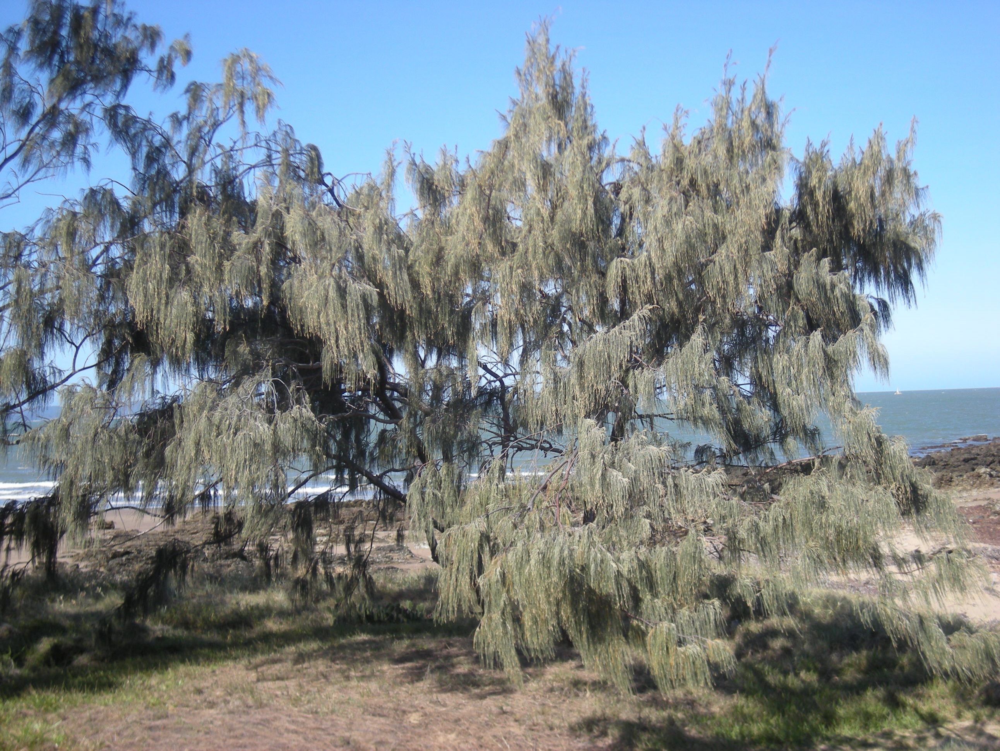
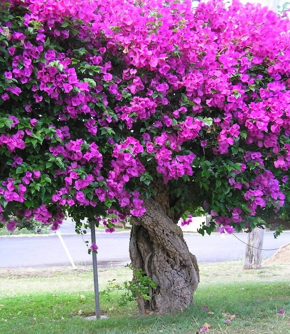
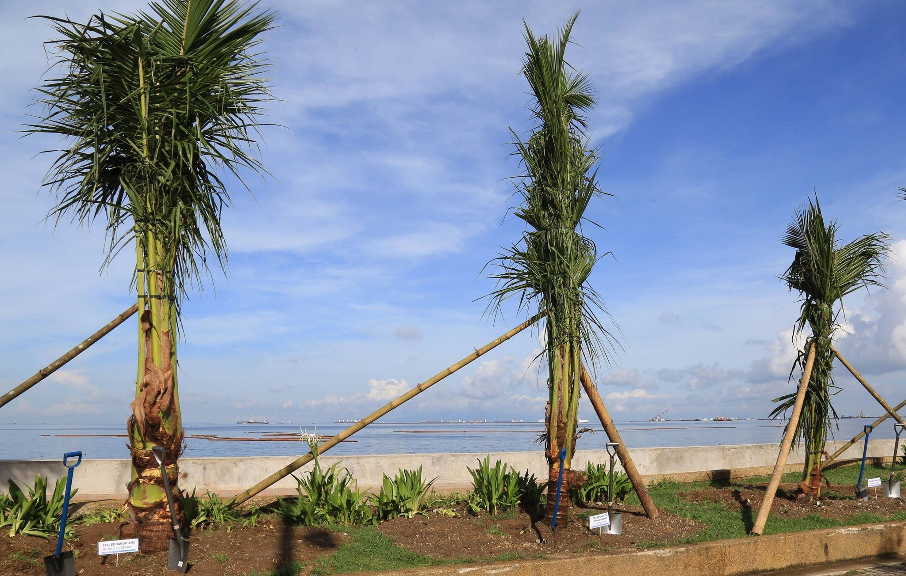
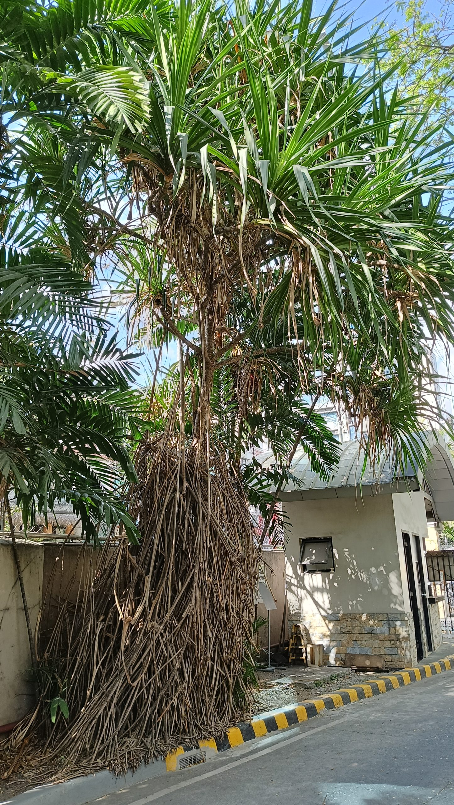
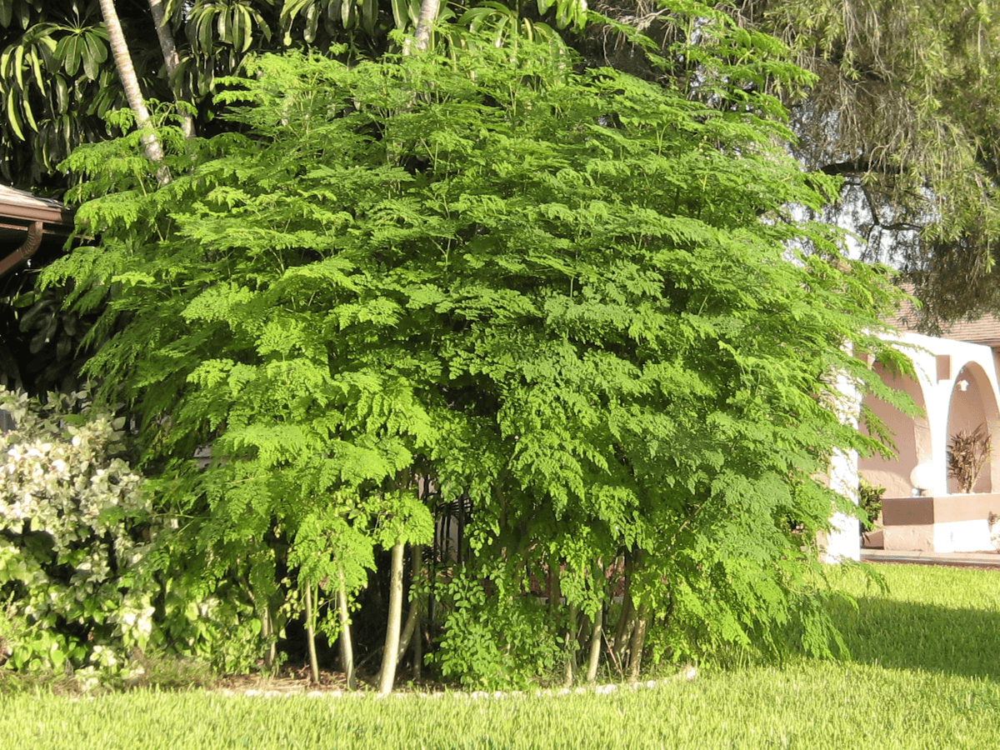

Ecological Benefits of Resilient Green Spaces
Drought-tolerant plants are more than attractive landscaping choices. They help conserve water, stabilize soil, support biodiversity, and create greener spaces that can survive in hot, dry, and changing climates.
Best Drought-Tolerant Plants & Trees for Philippine Cities
The Philippines has a tropical climate with intense heat, seasonal droughts (El Niño), and heavy monsoon rains. The best urban plants are those that can survive both dry stress and sudden heavy rainfall. The species below are widely used in Philippine landscaping, roadside planting, and urban greening projects because they are hardy, low-maintenance, and climate-adapted.
🌳 Acacia (Samanea saman / Rain Tree)
One of the most effective urban shade trees in the Philippines. It grows fast, tolerates heat and drought, and provides wide canopy cover that significantly reduces urban temperatures. Commonly planted along highways, parks, and open public spaces.

🌳 Narra (Pterocarpus indicus)
The national tree of the Philippines. It is resilient to heat and moderately dry conditions once established. Narra improves biodiversity, provides strong shade, and is highly valuable for long-term urban greening.

🌳 Agoho (Casuarina equisetifolia)
Casuarinas are highly resilient species widely utilized in urban forestry due to their extreme tolerance for drought, heat, and poor soil conditions. Their ability to survive in arid environments stems from unique evolutionary adaptations that minimize water loss while maximizing nutrient uptake.

🌺 Bougainvillea
A highly drought-resistant ornamental plant that thrives in full sun and hot urban environments. It is commonly used for fences, walls, and landscaping because it requires minimal water but produces vibrant flowers almost year-round.

🌴 Coconut Tree (Cocos nucifera)
Naturally adapted to tropical coastal climates, coconut trees tolerate heat, wind, and periodic drought. They are widely used in urban and rural Philippine landscapes for shade and ecological value.

🌱 Pandan (Pandanus amaryllifolius / odorifer)
A hardy tropical plant that survives in both sun and partial shade. It requires little water once established and is often used in urban gardens for its fragrance, greenery, and cultural value.

🌳 Neem Tree (Azadirachta indica)
Very drought-tolerant and fast-growing. Neem is known for its ability to survive in poor soil and hot climates. It is used in urban areas for shade and natural pest control benefits.

🌿 Malunggay (Moringa oleifera)
Malunggay is one of the most valuable drought-tolerant trees in the Philippines. It thrives in hot, dry conditions with minimal water and grows quickly even in poor soil. In urban environments, it is widely used in home gardens, roadside planting, and community greening projects because it provides both environmental and nutritional benefits. Its leaves improve food security, while its deep roots help stabilize soil and reduce erosion in degraded or sandy urban areas.
